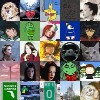
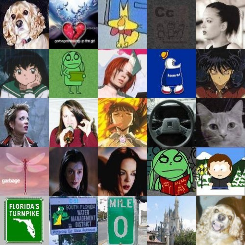

Horray! New Brandy Face! Enjoy Mutha-Fukas!
It would seem the state is being plauged by some torrential tropical rains...you know, of the kind that's not so torrential now, but will be when the two hurricanes come. Oh, I love hurricanes...but not in the destructive sense. I just enjoy the excitment of a serious storm that knocks the power out for an hour and brings everyone in the house closer together. In the case of the few storms I weathered in Florida, Brandy and I bonded as I looked up out of the screen over our pool at the lightning sky while she ran around the pool barking like a madwoman. That was a good time.
I started the real work this week, and it hasn't been very bad. The phones aren't crazy at night, and that's nice. It was actually really slow last night, so I looked through a bunch of old Dial America memos. BORING, but it helped the time go by. I think this girl Sonia will be their tonight, and that's a good thing. She's fun to talk to, but she leaves at 8. I leave at midnight! It's a crying shame. I'll somehow make it to the end of the day today.
My update will be up probably Sunday, but knowing me, it will be late. At least this year, I have an internet connection to update through. I think I need to put some final touches on the new Blog page, and I am going to try to quickly complete all the Fall 2001 journals, that way I will never have to worry about that again. Ah, once it is all over, I take comfort in the fact that I will be so busy, at least I won't have to worry about the little things. The funny thing about my Blog is when I don't have anything to do (aka, this summer), I NEVER write in my Blog! But when I'm running around like a chicken with it's head cut off running from the Purdue chicken company, I'm just a non-stop chatter box. Look forward to me shoveling more useless babble in the next few months!
Well, good luck on those hurricanes, Florida. I'm jealous. Expect the usual special end-of-the-Blog surprise. The long awaited super icon! It's going to be sad retiring this year's icons...but not the Brandy faces! They are sticking around :-) Anyways, I'll write later, hopefully. Later peeps.

In all seriousness, though, hurricanes aren't fun. I am watching CNN and they just upgraded the storm to the a Catagory 4 hurricane, just like Hurricane Andrew. That caused extensive damage and loss of life. It's important people take the storm seriously, it's going to be a big one. Florida will certainly be in my prayers, especially my cousin, wherever she is. I called her the other day, and she said she was evacuating for Bonnie, so it's good she's taken things seriously.
Anyways, welcome to my last entry of what will be known as my Junior year. Um, ya, it's been over a while now, but as far as the Spring/Summer Blog, this is it. I think the Blog has been really good this year. My HTML is so much better than a year earlier, and it just keeps getting better. I really did grow up alot this year, and I'm really glad that happened. I also am very grateful for some really good friends, especially Matt, who's become like my other half. Sharing yourself with someone is so much more fulfilling than being all by yourself. Also, this year I've done alot of really exciting academic things. I realize I'm going to be graduating this year, and though that's scary, I think I'll be alright. I know I can get my English degree and I know my Journalism degree is likely a sure bet as well. It makes me feel good to know that one more year of hard work will effectively change my life. We come now to the end of things.
But before all that, there's one Fall semester left. After that, likely a dismall Spring. There's lots of work to be done, and I am needing an exit plan. So, yeah, there will be stress. I imagine things will be more interesting, but I kind of hope things will be low key. I won't be a large part of Lambda, and I'll be working to save some money for next summer and after college. I have a car and a healthy grant, so things will certainly not be as depressing as last Spring. I have a pleasant outlook on things, but for now, looking back, I feel things probably couldn't have gone better. Here's to a great year. One of the best.
So, I promised something special, and since you can't really see it in the icon above, I've made a special deluxe supersize...

That's all of them, and except for the Brandy faces, they are all being retired. I'll miss the Inuyasha pictures, but trust me, I'll make more. I'll probably do some of that today, and finish up some update stuff. Again, the update will be up on Sunday, and expect something very pretty...or very ugly. I don't know about this one, people probably won't like it as much as this one, but I did my best. I think it's alot more original than some previous updates. The icons are cool...but you'll just have to wait and see.
As always, it was a pleasure. See you in a week :-)